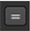

可以创建表达式链接，将通道和层控件与各个节点中的其他控件连接起来。由于这些控件不应该是动画的，所以你不能使用所有的 Nuke 表达式，也不能使用 Python 或 Tcl 语言。可以使用链接控件 链接 菜单  在 “属性” 面板上的控件旁边:
| 1。 | 单击 链接 菜单 并选择 设置 链接 。将打开表达式对话框。 |
| 2. | 在表达式字段中输入表达式并单击 好 。有关表达式的更多信息，请参见 表情 . |
| 3. | 您可以通过单击编辑现有链接 链接 菜单 和选择 编辑 链接 . |
| 4. | 你也可以 Ctrl/Cmd + 拖动 链接菜单 到另一个控件，在两者之间创建链接。 |
| 5. | 要删除链接，请单击 链接 菜单 并选择 移除 链接 . |
|
|